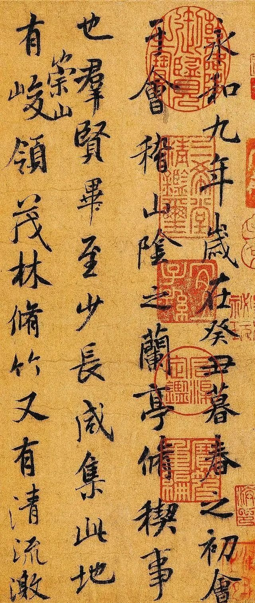

书法是中华文化的重要组成部分，它集中国历史、文学、哲学、绘画等多种文化形态于一身，以博大精深的意境和文化特质为世人瞩目。 书法具有特殊的文化育人功能。 当下，书法教育不能单纯进行技法的锤炼和理论知识的传授，更应探究其文化育人功能，以提升艺术审美能力、文化修养、道德品质为书法教育的首要任务。 书法有利于文化自信。 书法不仅仅是写字，其深层所蕴含的是中国古人认知世界的一种极其睿智的方式，是中国文化的一个重要标志；书法不仅是中国文化的精髓，更体现了古代士人的文化信仰和价值坐标，学习书法有利于树立文化自信。
